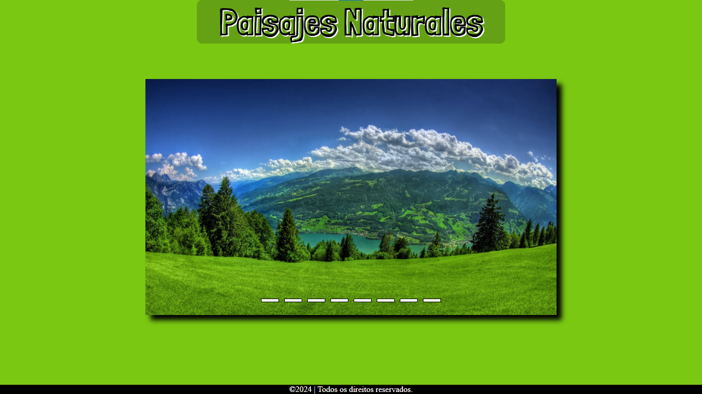
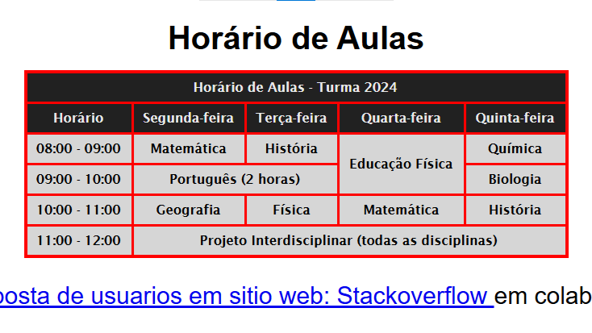

Meus Projetos

Paisajes Naturales
Paisajes Naturales é um site sobre carrossel de imagens.

Tabelas em HTML
Tabelas em HTML é um site com o que aprendimos a criar uma tabela em HTML e formatar com CSS.

Calculadora IMC
Calculadora IMC é um site programado com JavaScript para calcular o Índice de Massa Corporal.